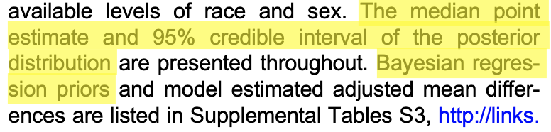

| mouse_id | experimental_group | gene_expression |
|---|---|---|
| 1 | knockout | 11.373786 |
| 2 | wild type | 12.493913 |
| 3 | mutant | 11.053951 |
| 4 | knockout | 12.946687 |
| 5 | wild type | 12.137490 |
| 6 | mutant | 11.736763 |
| 7 | knockout | 10.841763 |
| 8 | wild type | 15.129758 |
| 9 | mutant | 14.251409 |
| 10 | knockout | 10.199394 |
| 11 | wild type | 13.279209 |
| 12 | mutant | 12.223928 |
| 13 | knockout | 14.026516 |
| 14 | wild type | 11.219554 |
| 15 | mutant | 14.316064 |
| 16 | knockout | 8.045311 |
| 17 | wild type | 12.319848 |
| 18 | mutant | 11.615076 |
| 19 | knockout | 13.544851 |
| 20 | wild type | 16.084031 |
| 21 | mutant | 11.608953 |
The Ways of Bayes: An Introduction for Preclinical Researchers
Matthew Shane Loop, PhD FAHA
Harrison College of Pharmacy | Auburn University


P = 0.06
Emotional Reactions
- “I’ve wasted all this time”
- “What if I can’t graduate?”
- “What if I die in a soup kitchen knife fight?!”
Philosophical pinings
- What does \(p = 0.05\) even mean?
Surely, God loves the 0.06 nearly as much as the 0.05.” - Rosnow and Rosenthal (1989). “Statistical procedures and the justification of knowledge in psychological science.”
- Isn’t \(p = 0.05\) arbitrary?
Interpretation of p-values
When \(p = 0.06\) and your pre-specified significance level was 0.05, then your correct interpretation is that the results were “inconclusive” or “we don’t know.” Not that there is no effect.
However, is it really true that you’ve learned nothing?
“it seems to me that statistics is often sold as a sort of alchemy that transmutes randomness into certainy, an”uncertainty laundering” that begins with data and concludes with success as measured by statistical significance.” - Gelman (2016). “The Problems With P-Values are not Just With P-Values.”
Matthew Loop, PhD

Assistant Professor, Department of Health Outcomes Research and Policy
- Began in Biology, anole lizards and pipetting stuff
- PhD in Biostatistics and Postdoctoral Fellowship in Epidemiology
- 2 years as “friendly neighborhood statistician” in DPET
- Taught biostatistics to DPET PhD students and industry fellows
Type II errors are a big problem for bench scientists
- There’s so much work planning and money that goes into these projects
- I recently submitted a grant application with prospective data collection where I was the PI
- You don’t want to have nothing to show for it
- Clinicians have RCTs that can fail to demonstrate a clear effect, but they have clinical revenue to fall back on
Learning Objectives
- Explain how a treatment effect estimated using Bayesian modeling would differ in interpretation compared to using Frequentist modeling
- List reasons why you might want to use a Bayesian model over a Frequentist model
Explain how a treatment effect estimated using Bayesian modeling would differ in interpretation compared to using Frequentist modeling
Frequentist
data + model to fit
Bayesian
data + model to fit + prior
Frequentist
data + model to fit
| Characteristic | Beta | 95% CI1 | p-value |
|---|---|---|---|
| experimental_group | |||
| knockout | — | — | |
| mutant | 0.83 | -1.1, 2.8 | 0.4 |
| wild type | 1.7 | -0.31, 3.6 | 0.093 |
| 1 CI = Confidence Interval | |||
Frequentist
data + model to fit
| Characteristic | Beta | 95% CI1 | p-value |
|---|---|---|---|
| experimental_group | |||
| knockout | — | — | |
| mutant | 0.83 | -1.1, 2.8 | 0.4 |
| wild type | 1.7 | -0.31, 3.6 | 0.093 |
| 1 CI = Confidence Interval | |||
- Inconclusive differences in mean gene expression among experimental groups
- Wild type mean gene expression might be between 0.31 units lower or 3.6 units higher than knockout
Bayesian
data + model to fit + prior
| Characteristic | Beta | 95% CI1 |
|---|---|---|
| experimental_group | ||
| knockout | — | — |
| mutant | 0.61 | -0.92, 2.2 |
| wild type | 1.2 | -0.29, 2.8 |
| 1 CI = Credible Interval | ||
- 95% probability that wild type mean gene expression is between 0.29 units lower and 2.8 units higher than knockout mean gene expression
Summary of Posterior Distribution
Parameter | Median | 95% CI | pd | ROPE | % in ROPE
------------------------------------------------------------------------------------------
(Intercept) | 11.76 | [10.57, 12.94] | 100% | [-0.10, 0.10] | 0%
experimental_groupmutant | 0.61 | [-0.92, 2.20] | 79.10% | [-0.10, 0.10] | 8.13%
experimental_groupwild type | 1.19 | [-0.29, 2.84] | 93.85% | [-0.10, 0.10] | 3.39%
sigma | 1.72 | [ 1.29, 2.45] | 100% | [-0.10, 0.10] | 0%
R2 | 0.11 | [ 0.00, 0.34] | 100% | [-0.10, 0.10] | 46.34%What is this prior?
List reasons why you might want to use a Bayesian model over a Frequentist model
Reasons
- What you put into the model and how you interpret the results are different in the Bayesian and Frequentist paradigms. And these differences are important.
- But it is important to know when to use a Bayesian model versus a Frequentist model. You can use either just about any time, but there are some specific situations where Bayesian models come in handy.
- Therefore, we are going to talk about two of those situations: small sample sizes with known parameter constraints and topics with a lot of debate in the field.
‘Petite’ sample size with known parameter constraints
- Restrictions on what are plausible values for the parameters can help improve precision in estimating treatment effects
- Similar to PK modeling where you take into account known physiological restrictions on possible values to get better estimates
- Petite data and lots of parameters
The treatment has a lot of debate in the field

Successful uses of Bayesian analysis
Example from Eshelman

Email from a previous student
The party doing the modeling wants to use a Bayesian approach for the extrapolation. In addition, a Bayesian approach was used to generate a popPK model and to predict the dose…. I can build on my knowledge [of Bayesian analysis] to educate myself further or ask educated questions (as we have a biostatisticians in our team).
Resources
The patron saint of Bayesian data analysis for non-statisticians

Statistical Rethinking: A Bayesian Course with Examples in R and STAN - the best introductory statistics textbook there is
Statistical Rethinking online course